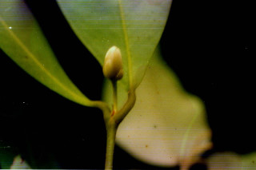
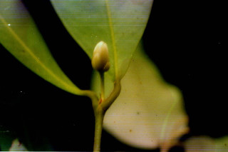

Evergreen trees, up to 15 m tall.
15 ಮೀ ಎತ್ತರದವರೆಗೆ ಬೆಳೆಯುವ ಮರಗಳು.
15 മീറ്റര് വരെ ഉയരമുള്ള നിത്യഹരിത മരങ്ങള്
பசுமைமாறாமரங்கள், 15 மீ. உயரம் வரை வளரக்கூடியது.
Trunk clear bole; bark greyish.
ಕಾಂಡಗಳು ನಿರ್ದಿಷ್ಟವಾದ ಬುಡ ಹೊಂದಿದ್ದು ಬೂದು ಬಣ್ಣದ ತೊಗಟೆ ಸಮೇತವಾಗಿರುತ್ತವೆ.
കൃത്യമായ തായ്ത്തടി; ചാര നിറത്തിലുളള പുറംതൊലി.
மரத்தின் தண்டு குறுக்குவெட்டுத் தோற்றத்தில் ஒழுங்கான வளையமானது; மரத்தின் பட்டை சாம்பல் நிறமானது.
Leaves simple, opposite, decussate; petiole up to 1.5 cm long, canaliculate; lamina up to 12 × 4 cm, oblong, apex bluntly acuminate, base rounded or acute, margin entire.
ಎಲೆಗಳು ಸರಳವಾಗಿದ್ದು,ಕತ್ತರಿಯಾಕಾರದ ಅಭಿಮುಖ ಜೋಡನಾ ವ್ಯವಸ್ಥೆಯಲ್ಲಿರುತ್ತವೆ; ಎಲೆತೊಟ್ಟುಗಳು 1.5 ಸೆಂ.ಮೀ, ಉದ್ದಹೊಂದಿದ್ದು ಕಾಲುವೆ ಗೆರೆ ಸಮೇತವಾಗಿರುತ್ತವೆ. ಎಲೆಪತ್ರಗಳು 12 X 4 ಸೆಂ ಮೀ ಗಾತ್ರವಿದ್ದು, ಚತುರಸ್ರದ ಆಕಾರ, ಮೊಂಡಾದ ಅಗ್ರವುಳ್ಳ ಕ್ರಮೇಣ ಚೂಪಾಗುವ ಮಾದರಿಯ ತುದಿ, ದುಂಡಾದ ಅಥವಾ ಚೂಪಾದ ಬುಡವನ್ನು ಹೊಂದಿದ್ದು ನಯವಾದ ಅಂಚಿನ ಸಮೇತವಿರುತ್ತವೆ.
സമ്മുഖ, ഡെക്കുസേറ്റ് ക്രമത്തിലുള്ള ലഘുപത്രങ്ങള്; ഇലഞെട്ടിന് 1.5 സെ.മി വരെ നീളം, ചാലോടുകൂടിയതാണ്; പത്രഫലകത്തിന് 4 സെ.മി വരെ നീളവും 12 സെ.മി വരെ വീതിയും പത്രാധാരം വൃത്താകാരത്തിലോ, പത്രാഗ്രം മുനപ്പില്ലാത്ത ചെറുവാലോടുകൂടിയതോ ആണ്; അവിഭജിതമായ അരികുകള്.
இலைகள் தனித்தவை, எதிரடுக்கமானவை, குறுக்குமறுக்கமானவை; இலைக்காம்பு 1.5 செ.மீ. நீளமானது, குறுக்குவெட்டுத் தோற்றத்தில் கேனாலிகுலேட்; இலை அலகு 12 X 4 செ.மீ.,நீள்சதுர வடிவானது, அலகின் நுனி மழுங்கிய அதிக்கூரியது, அலகின் தளம் வட்டம் அல்லது கூரியது, அலகின் விளிம்பு முழுமையானது.
Flowers solitary or paired in the axils of the fallen leaves; pedicels up to 2.5 cm long, glabrous; petals white.
ಹೂಗಳು ಒಂಟಿಯಾಗಿ ಅಥವಾ ಜೋಡಿಯಾಗಿ ಉದುರಿದ ಎಲೆಗಳ ಅಕ್ಷಾಕಂಕುಳಿನಲ್ಲಿರುತ್ತವೆ; ಹೂತೊಟ್ಟುಗಳು 2.5 ಸೆಂ ಮೀ ಉದ್ದವಿದ್ದುರೋಮರಹಿತವಾಗಿರುತ್ತವೆ; ಪುಷ್ಪದಳಗಳು ಬಿಳಿ ಬಣ್ಣದಲ್ಲಿರುತ್ತವೆ.
കൊഴിഞ്ഞ ഇലകളുടെ കക്ഷങ്ങളില്, ഒറ്റക്കായോ ജോഡിയായോ ഉാകുന്ന പൂക്കള്; അരോമിലവും 2.5 സെ.മി വരെ നീളമുള്ളതുമായ പൂന്ത്; വെളുത്ത ദളങ്ങള്.
மஞ்சரிகள் தனித்தவை அல்லது இரட்டை மலர்களாக இலைக்கோணங்களில் இலை உதிர்ந்த பின் காணப்படுகின்றன; மலர்காம்பு 2.5 செ.மீ. நீளமுடையது, உரோமங்களற்றது; அல்லி இதழ்கள் வெள்ளை நிறமானது.
Capsule, globose, up to 2 × 1.7 cm, 2 lobed, pointed at apex, 1-seeded.
ಕಾಯಿಗಳು ಗೋಳಾಕಾರದಲ್ಲಿದ್ದು , 2 X 1.7 ಗಾತ್ರ ಹೊಮದಿದ್ದು ಎರಡು ಹಾಲೆಗಳನ್ನು ಹೊಂದಿರುತ್ತವೆ ಹಾಗೂ ಅಗ್ರದಲ್ಲಿ ಚೂಪಾಗಿದ್ದು ಒಂದು ಬೀಜವನ್ನೊಳ ಗೊಂಡಿರುತ್ತವೆ.
കായ, രുഭാഗങ്ങളുള്ളതും, 2 സെ.മി നീളമുള്ളതും 1.7 സെ.മി വീതിയുള്ളതും, അറ്റം കൂര്ത്തതുമായ ഗോളമാണ്.
கனி கோளவடிவானது, 2 X 1.7 செ.மீ. இருபிளவுகளுடையது, நுனி கூரியது, ஒர் விதையுடையது.


 
